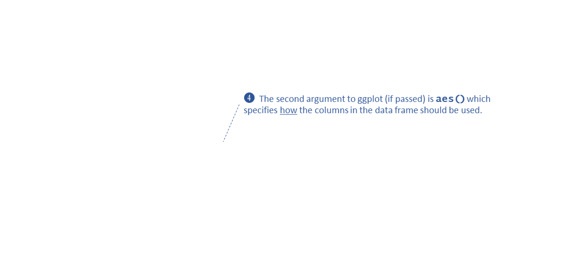
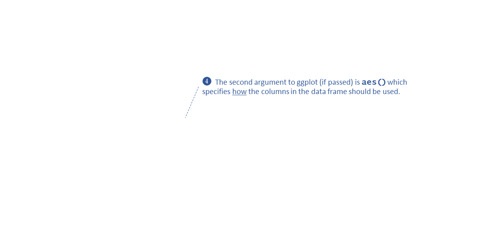
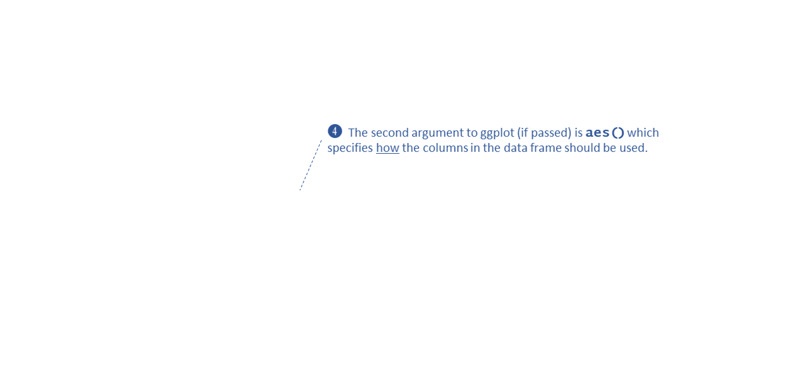

Anatomy of a ggplot


 



Making maps with ggplot

Making ggplots with geospatial data (i.e., maps) is not that different than regular ggplots.
A few differences:
geom_sf()ggplot()ggspatial package has functions you can use to add
other map elements (e.g., scale bar)
geom_sf()The magical powers of geom_sf():
aes(),
geom_sf() figures it out!geom_sf() will draw points, lines or polygons,
depending on the feature typegeom_sf() provides lots
of options to customize the visual properties. Most of these can be
mapped to attribute fields!
You may notice, no matter what the CRS of the underlying data, the graticules (gridlines) are drawn in long-lat.
To force the axes to use the projected map coordinates, add
coord_sf().
Next, we add fire ignition points:
Modify the visual properties:
To use a different point symbol, set the pch (plot
character) property to one of the following:
See also the ggstar
package, which provides about 30 additional shapes for point
features.
Here we add facet_grid() to create a separate plot for
each fire cause (which is saved in the CAUSE column):
##
## HC LTG MI
## 829 3355 248